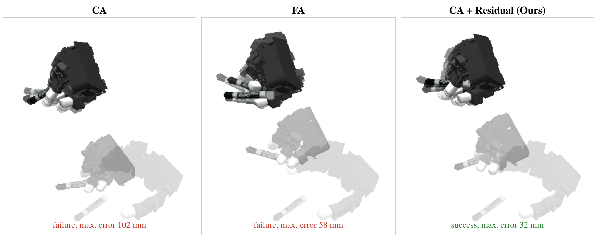
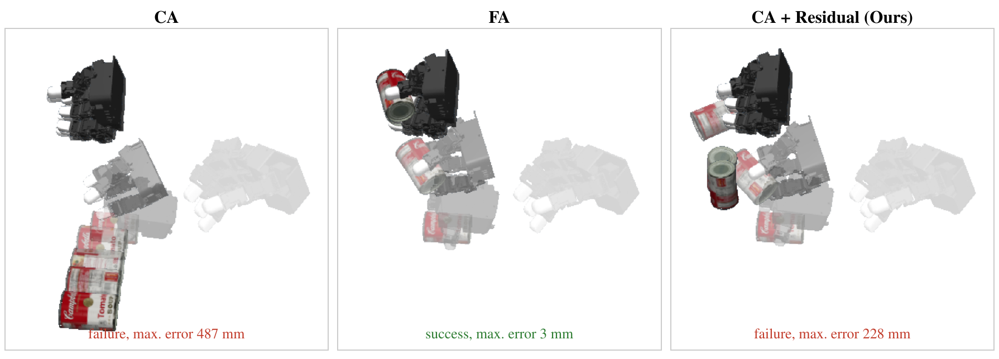
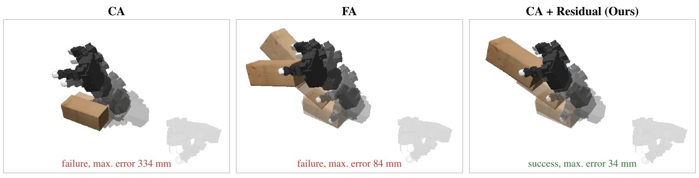
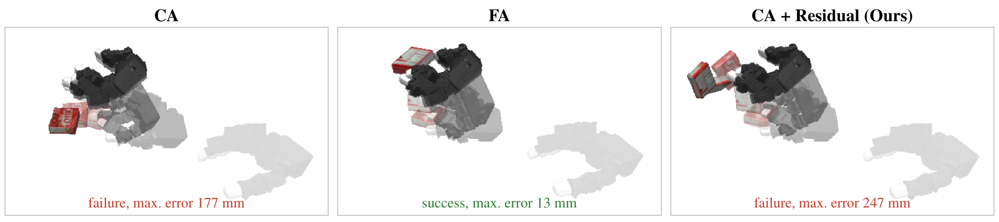
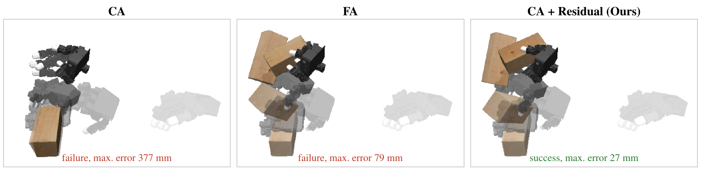
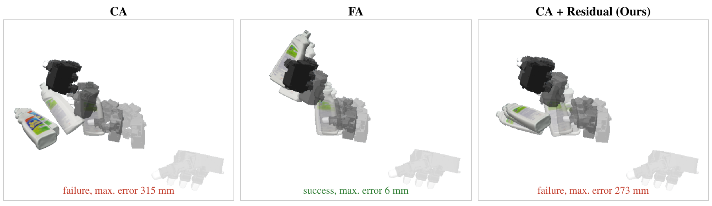

Amortizing Force-Aware Retargeting
for Scalable Human-to-Robot Data Generation

Abstract
We present a framework that amortizes force-aware retargeting by learning reusable control corrections from physics-optimized robot trajectories. Human demonstrations offer scalable data for robot learning, but kinematic retargeting does not guarantee physical executability, while physics-based optimization is costly for each demonstration. Our framework replaces per-demonstration force-aware optimization with learned residual corrections. This approach is implemented by training a lightweight MLP to predict the residual between contact-aware reference controls and force-aware optimized controls generated by DexForge. The predicted residuals are added to the contact-aware reference controls to generate corrected control trajectories for new demonstrations.
Through simulation experiments retargeting DexYCB human demonstrations to a LEAP Hand, we achieve execution success rates of 33.7% on unseen subjects and 47.4% on unseen objects, substantially improving upon the respective 2.0% and 0.0% success rates of the contact-aware retargeting baseline. With reduced computational cost, our approach offers a promising direction for scalable generation of physically executable robot demonstrations.
Method
Residual control learning. DexForge's contact-aware (CA) retargeting produces reference position-control targets \(u_k^{\mathrm{CA}}\) and a contact plan adapted to the robot hand; force-aware (FA) retargeting then optimizes these targets in a physics simulator to obtain \(u_k^{\mathrm{FA}}\). We learn the residual \(\Delta u_k^* = u_k^{\mathrm{FA}} - u_k^{\mathrm{CA}}\) (22-D: 6 global hand pose + 16 finger joints) with a lightweight MLP (two hidden layers of 256 units). Inputs are CA reference controls and velocities, planned fingertip contacts, the gravity direction in the object frame, and the reference object velocity.
Open-loop trajectory generation. For a new demonstration we run only CA retargeting, predict the residual, and execute the corrected target \(\hat{u}_k = u_k^{\mathrm{CA}} + f_\theta(z_k)\) open-loop at 100 Hz, replacing per-demonstration FA optimization.
Generalization to Unseen Subjects and Objects
We retarget DexYCB human demonstrations to a LEAP Hand in simulation and evaluate on the official S1 (unseen subjects) and S3 (unseen objects) splits, plus an exploratory S1×S3 setting combining both exclusions (15 demonstrations).
| Method | Unseen subjects (S1) | Unseen objects (S3) | Both (S1×S3) |
|---|---|---|---|
| CA | 2.0 | 0.0 | 0.0 |
| Direct FA prediction | 9.9 | 16.2 | – |
| CA + Residual (Ours) | 33.7 ± 4.3 | 47.4 ± 3.5 | 55.6 ± 3.8 |
Execution success rate (%). Ours reports mean ± sample standard deviation over three seeds. Direct FA prediction uses the same inputs, data, and MLP but regresses full FA controls instead of residuals.
Qualitative Rollouts
CA vs. FA vs. CA + Residual (Ours) on the same demonstrations.
Ours succeeds, FA fails — large marker

Ours fails, FA succeeds — tomato soup can

Ours succeeds, FA fails — wood block

Ours fails, FA succeeds — gelatin box

Success — wood block

Failure — bleach cleanser

A common failure mode is insufficient grasp support from the position targets, causing the object to slip or drop.
Amortization and Scalable Data Generation

Projected successful trajectory yield under constant processing times and success rates. Shaded regions indicate initial costs; circles mark break-even points between FA and our method.
Including the initial cost of supervision generation and training (24.8 / 26.0 GPU-hours on an RTX 3090 for S1 / S3), residual prediction matches per-demonstration FA optimization in cumulative successful trajectories at 37.1 GPU-hours (S1) and 35.8 GPU-hours (S3), and yields more successful trajectories beyond these points. These projections are based on single-process timings and assume a sufficient supply of new demonstrations.
BibTeX
@misc{im2026amortizing,
title = {Amortizing Force-Aware Retargeting for Scalable Human-to-Robot Data Generation},
author = {Im, Sohyeon and Lee, Sangmoon},
year = {2026}
}